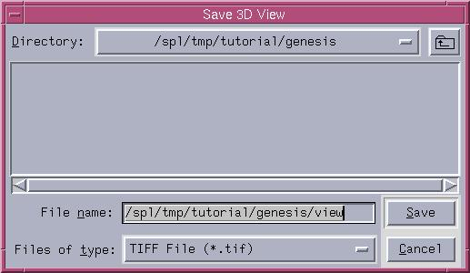

- Under the File pulldown menu in the Menu
window, use the Save 3D View As and Save Active Slice As options
to save images in the TIFF file format.
- Then a Save 3D View or Save Slice dialog box pops up,
which let you choose the path to save your file, and hit Save.
Note that the Active Slice is the one that you clicked on last.

|

|